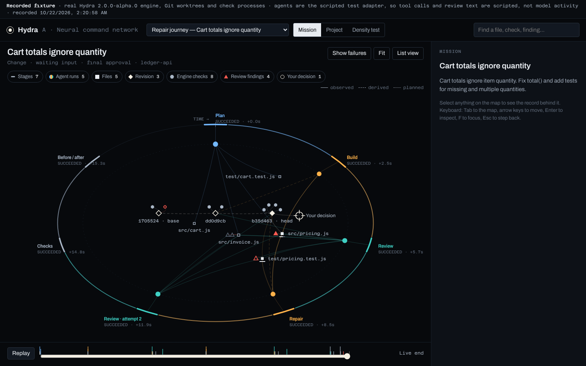
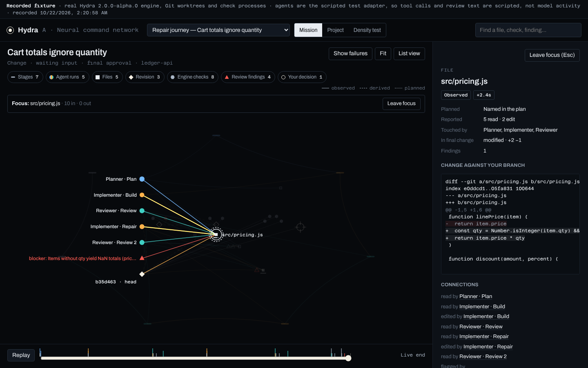
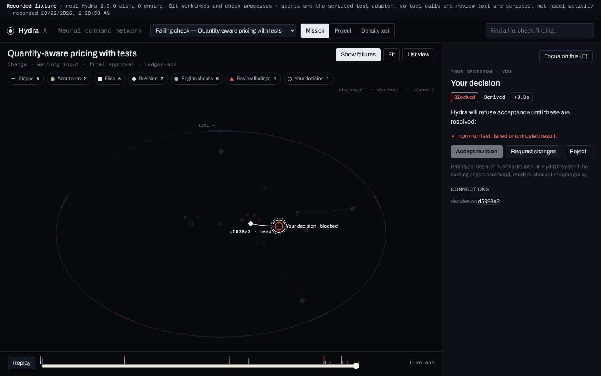
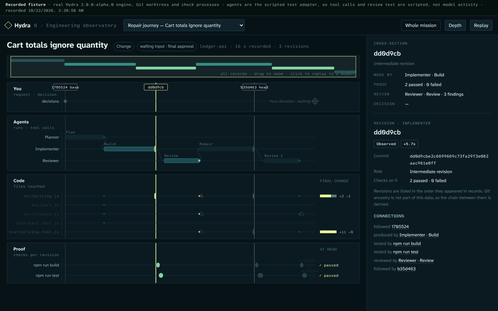
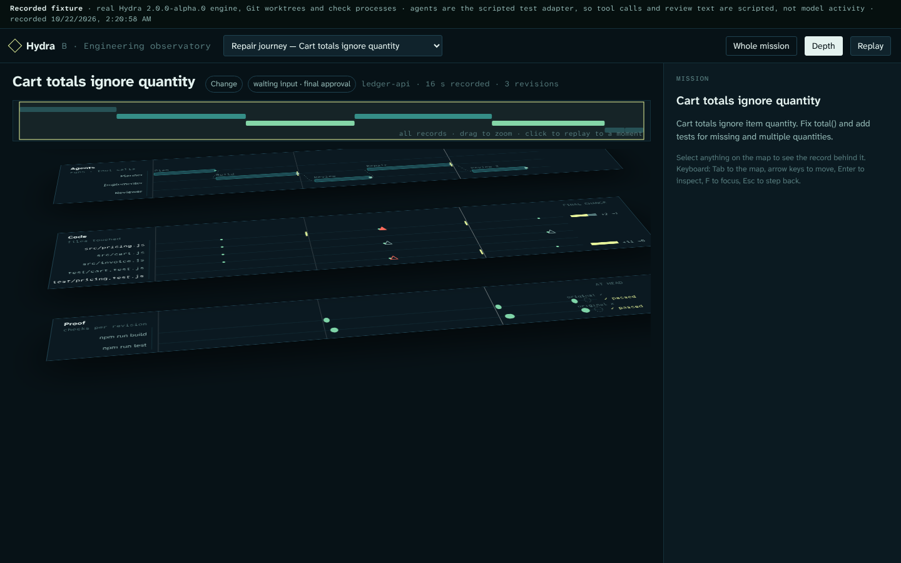
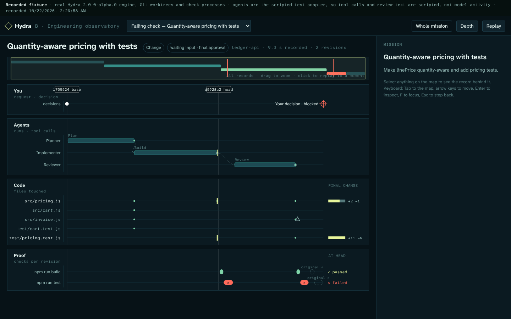
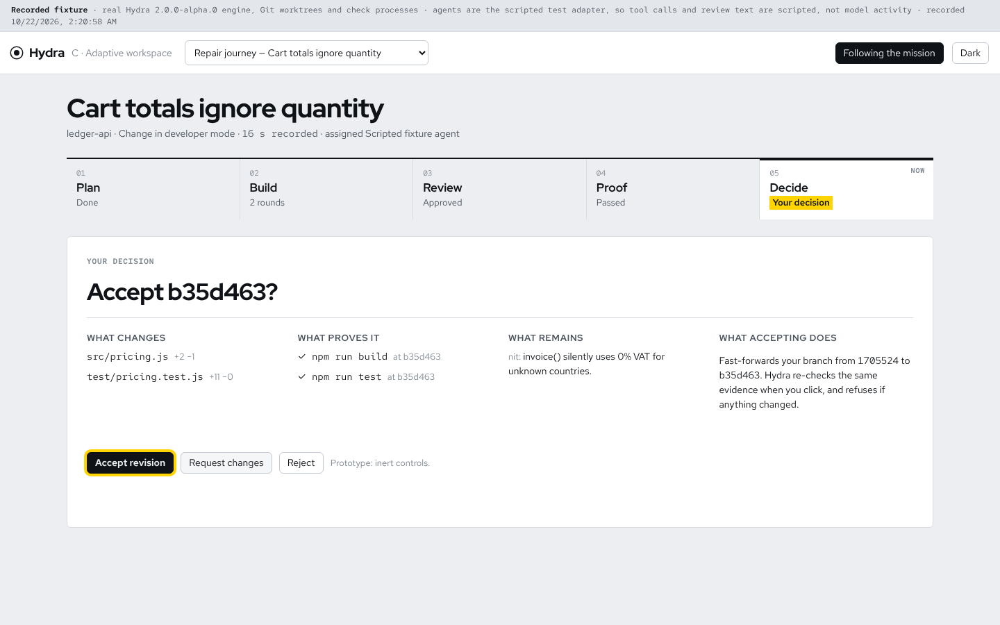
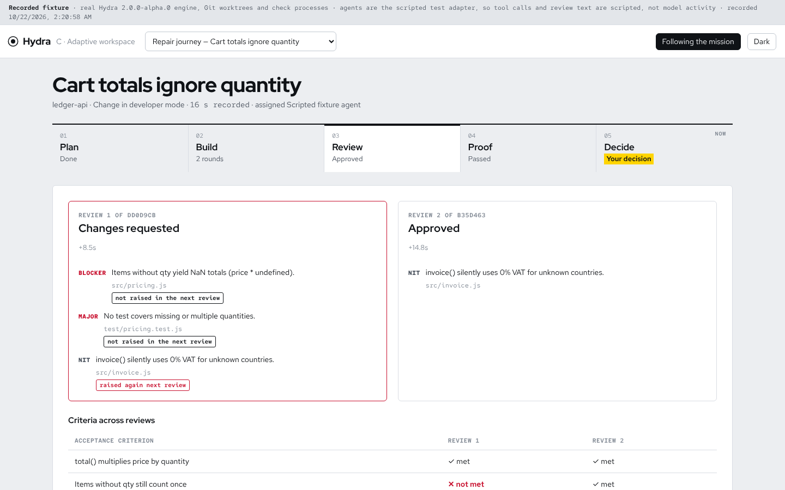
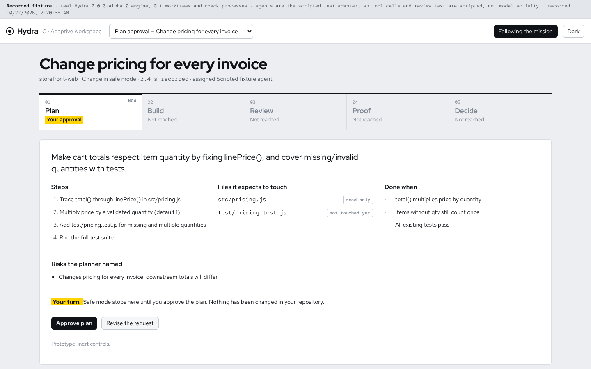

Three working prototypes of the same missions. Each one opens real records from the Hydra engine, not mockup data. Try them, then pick one direction or the recommended hybrid. Nothing in the app changes until you choose.
Scripted browser tour over the recorded fixtures, with captions. No agent or provider activity.
The mission as a settled map: stages on a clock ring, the revision chain across the centre, files pulled toward the agents that touched them.



Engineering work is a network of evidence. Understand it by walking the relationships.
Hue = who · Red = stop · Light = now
Archivo, width-variable · Azeret Mono 25e31e8
Recorded time runs left to right through four planes: You, Agents, Code, Proof. Every revision is a gate cut through all of them.



A precision instrument observing a process. Read it like a scope: time, lanes, cuts.
Position = who · Light = how much · Red = stop
Atkinson Hyperlegible · Mono 0O 1lI 25e31e8
The workspace reorganises around the phase: plan structure, build stream, review comparison, proof matrix, then a calm decision brief.



The interface is the current question. Show what matters now; keep the rest one step away.
Yellow = your turn · Red = stop · Ink = everything else
Red Hat Display · Text · Mono 25e31e8
1–5, my design judgement after building and using each one on the same records. Not a user study.
| Criterion | A Network | B Observatory | C Adaptive | Why |
|---|---|---|---|---|
| Understandable without a tutorial | 3 | 3 | 5 | C names the phase and shows one question at a time; A's clock and B's planes need a first look at the legend. |
| Real evidence in one or two actions | 4 | 4 | 5 | All three open the same inspector; C puts diffs and check output directly on the lens. |
| Truthfulness and labelling | 5 | 5 | 4 | C's "not raised again" is derived and says so, but it is the one place a reader might over-trust a comparison. |
| Distinctive, not another dashboard | 5 | 4 | 2 | A has no category precedent; B reads as an instrument; C is excellent but familiar in shape. |
| Relationships (who touched what, chains) | 5 | 4 | 2 | A's focus on a file is the clearest picture of rework across stages. |
| Time and replay precision | 3 | 5 | 2 | B keeps linear recorded time and revision gates; A's ring trades precision for shape. |
| Comfort after 40 minutes | 3 | 4 | 5 | Dense dark canvases tire faster; C is calm by design. |
| Scale (100+ operations, many missions) | 3 | 4 | 4 | A needs aggregation above roughly 100 operations; B and C grow linearly. |
| Accessibility and phones | 3 | 3 | 5 | A and B provide list alternatives; C is native HTML throughout. |
Same synthetic graph, three renderers, two interactions per size: isolate (every element restyles each frame) and pan. Script time is the main-thread work per frame.
Benchmark results are added below once measured on your laptop.
This keeps what only A does (the picture of relationships), what only B does (the exact-revision trust question) and what only C does (understandable without a tutorial, calm at delivery). Each part stays in the role it is strongest at, instead of being averaged.
Your turn: reply in the conversation with A, B, C, Hybrid, or your own mix ("A's map with C's colours", for example). I'll lock the design system from your answer and only then rebuild the app.